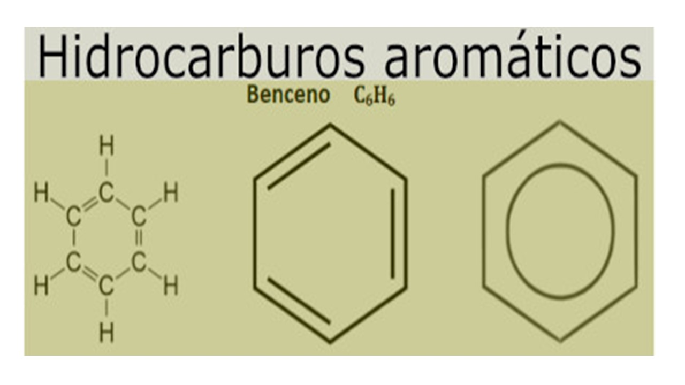

BENCENO
El benceno, conocido también como benzol, es un líquido incoloro de olor dulce. El benceno se evapora al aire rápidamente y es sólo ligeramente soluble en agua. El benceno es sumamente inflamable.
Las fuentes naturales de benceno, entre las que se incluyen las emisiones volcánicas y los incendios forestales, también contribuyen a la presencia de benceno en el medio ambiente. Una fuente importante de benceno en el aire ambiental es el humo de tabaco, especialmente en el interior de viviendas.
El benceno es un contaminante conocido de los productos derivados del petróleo. Se supone que el propano y el butano que se usan en los productos de cuidado personal se purifican para que no haya benceno presente. La FDA ha confirmado que los propulsores son una fuente potencial de contaminación por benceno.
Lista de desodorantes detectados con benceno: Old Spice High Endurance AP Spray Pure Sport 12/6oz. Old Spice Hardest Working Collection Inv Spray Stronger Swagger 3.8oz
El benceno es un hidrocarburo aromático líquido, volátil, transparente e inflamable, con un aroma muy característico. Se usa principalmente como materia prima en la síntesis de un gran número de productos y es también un componente de la gasolina.
El benceno es la materia prima base para la fabricación del óxido de propileno y el estireno y sus derivados (polioles y glicoles propilénicos).
El benceno se usa como punto de partida para manufacturar otros productos químicos usados en la fabricación de plásticos, resinas y fibras sintéticas. También se usa benceno para hacer ciertos tipos de lubricantes, tintes, detergentes y pesticidas.
EFECTO EN LA SALUD Y ECOSISTEMA:
El benceno es un compuesto orgánico potencialmente carcinogénico que, tras ser inhalado y después de exposiciones prolongadas, puede ocasionar graves efectos sobre la salud humana, ya que afecta al sistema nervioso central y a la normal producción de células sanguíneas, puede deteriorar el sistema inmunitario y dañar el material genético celular, lo que a su vez puede original determinados tipos de cáncer (leucemia) así como malformaciones congénitas.
Sus efectos nocivos se dejan igualmente sentir sobre el medio ambiente, ya que resulta marcadamente tóxico para los organismos acuáticos y, en especial, sobre los invertebrados, en los que puede producir cambios genéticos (problemas reproductivos, malformaciones) y de comportamiento. Afecta también a la vegetación (puede llegar a provocar la muerte de la planta afectada, lo que adquiere además un matiz económico cuando se trata de cultivos), así como al clima, ya que se trata de un gas de efecto invernadero que contribuye al calentamiento de la atmósfera y a la formación de O3 y de aerosoles orgánicos secundarios.